CODING AGENTS AS PIXEL WORLD MODELS
traex/DeepSeek-V4.1-Flash · phygen_126
点击播放 · 原生 RGB 像素
逐轮保存的候选
回放视频、检查图与代码变化。
每份候选均可单独播放。实际图片检查记录在下方工具轨迹中。
候选 01播放与检查图
点击播放 · 原生 RGB 像素

展开代码变化
--- 上一保存版本
+++ 本次保存版本
@@ -0,0 +1,304 @@
+"""Procedural RGB renderer for a steadily burning copper strip."""
+
+from pathlib import Path
+
+import numpy as np
+from PIL import Image, ImageDraw, ImageFilter
+from scipy.ndimage import gaussian_filter
+
+import artifact_io
+
+
+CASE_DIR = Path(__file__).resolve().parent
+WIDTH, HEIGHT, N_FRAMES, FPS = 256, 144, 20, 4
+SS = 3
+RNG = np.random.default_rng(126)
+
+
+def smoothstep(edge0, edge1, x):
+ t = np.clip((x - edge0) / (edge1 - edge0), 0.0, 1.0)
+ return t * t * (3.0 - 2.0 * t)
+
+
+def fbm_field(shape, cell, octaves=4, seed=0):
+ """Small deterministic fractal field made from bilinearly interpolated noise."""
+ rng = np.random.default_rng(seed)
+ h, w = shape
+ total = np.zeros(shape, dtype=np.float32)
+ weight = 0.0
+ for octave in range(octaves):
+ gw = max(3, int(w / cell) + 3)
+ gh = max(3, int(h / cell) + 3)
+ grid = rng.random((gh, gw), dtype=np.float32)
+ layer = np.asarray(
+ Image.fromarray((grid * 255).astype(np.uint8)).resize(
+ (w, h), Image.Resampling.BICUBIC
+ ),
+ dtype=np.float32,
+ ) / 255.0
+ total += layer * (0.5 ** octave)
+ weight += 0.5 ** octave
+ cell = max(2.0, cell * 0.48)
+ return total / weight
+
+
+def make_background():
+ h, w = HEIGHT * SS, WIDTH * SS
+ yy, xx = np.mgrid[0:h, 0:w].astype(np.float32)
+ x = xx / SS
+ y = yy / SS
+
+ base = np.zeros((h, w, 3), dtype=np.float32)
+ base[..., 0] = 12 + 7 * (1 - y / HEIGHT)
+ base[..., 1] = 14 + 6 * (1 - y / HEIGHT)
+ base[..., 2] = 16 + 5 * (1 - y / HEIGHT)
+
+ # Worktop: near-black stone with fine warm grain and a shallow perspective.
+ table = smoothstep(80, 144, y)
+ grain = fbm_field((h, w), 27 * SS, 5, 11)
+ grain2 = fbm_field((h, w), 5 * SS, 3, 12)
+ stone = np.stack(
+ [11 + 5 * grain, 12 + 5 * grain, 13 + 6 * grain], axis=-1
+ )
+ stone *= (0.88 + 0.18 * grain2[..., None])
+ base = base * (1 - table[..., None]) + stone * table[..., None]
+
+ # Soft shadow and cool rim behind the strip.
+ shadow = np.exp(-((x - 121) / 92) ** 2 - ((y - 77) / 31) ** 2)
+ base *= 1.0 - 0.28 * shadow[..., None]
+ halo = np.exp(-((x - 146) / 60) ** 2 - ((y - 38) / 45) ** 2)
+ base += halo[..., None] * np.array([1.5, 4.0, 3.4], dtype=np.float32)
+
+ # A few restrained bokeh highlights give the background depth.
+ for cx, cy, radius, amp in [
+ (228, 20, 2.4, 7),
+ (38, 24, 1.4, 5),
+ (213, 105, 1.7, 4),
+ (72, 112, 1.1, 3),
+ ]:
+ spot = np.exp(-((x - cx) ** 2 + (y - cy) ** 2) / (radius ** 2))
+ base += spot[..., None] * np.array([amp * 0.8, amp, amp * 1.1], dtype=np.float32)
+
+ return np.clip(base, 0, 255)
+
+
+def bezier(p0, p1, p2, p3, steps):
+ t = np.linspace(0, 1, steps, dtype=np.float32)
+ u = 1 - t
+ pts = (
+ u[:, None] ** 3 * np.array(p0)
+ + 3 * u[:, None] ** 2 * t[:, None] * np.array(p1)
+ + 3 * u[:, None] * t[:, None] ** 2 * np.array(p2)
+ + t[:, None] ** 3 * np.array(p3)
+ )
+ return pts
+
+
+def draw_copper(img, frame):
+ """Rasterize a tapered copper foil with oxidation, bevel, and hot tip."""
+ h, w = img.shape[:2]
+ layer = Image.new("RGBA", (w, h), (0, 0, 0, 0))
+ draw = ImageDraw.Draw(layer)
+
+ # Gentle camera drift, entirely below one pixel at final resolution.
+ cam_y = -0.45 * np.sin(frame / 19 * np.pi)
+ cam_x = 0.25 * np.sin(frame / 19 * np.pi + 0.7)
+ s = SS
+ pts = np.array(
+ [
+ (-22, 91),
+ (27, 80),
+ (72, 77),
+ (117, 69),
+ (153, 65),
+ (177, 68),
+ (183, 74),
+ (174, 78),
+ (151, 77),
+ (116, 83),
+ (71, 91),
+ (26, 95),
+ (-22, 105),
+ ],
+ dtype=np.float32,
+ )
+ pts[:, 0] = (pts[:, 0] + cam_x) * s
+ pts[:, 1] = (pts[:, 1] + cam_y) * s
+ draw.polygon([tuple(p) for p in pts], fill=(96, 47, 28, 255))
+
+ # Thin dark edge and beveled upper face.
+ upper = pts.copy()
+ upper[:, 1] -= 2.5 * s
+ draw.line([tuple(p) for p in upper], fill=(202, 106, 62, 255), width=2 * s)
+ draw.line([tuple(p) for p in pts[5:8]], fill=(225, 137, 85, 255), width=2 * s)
+
+ arr = np.asarray(layer, dtype=np.float32)
+ alpha = arr[..., 3:4] / 255.0
+ xx = np.arange(w, dtype=np.float32)[None, :] / s
+ yy = np.arange(h, dtype=np.float32)[:, None] / s
+ patina = fbm_field((h, w), 14 * s, 5, 21)
+ streaks = fbm_field((h, w), 3 * s, 3, 22)
+
+ copper = np.empty_like(arr[..., :3])
+ copper[..., 0] = 102 + 62 * streaks + 30 * patina
+ copper[..., 1] = 45 + 31 * streaks + 18 * patina
+ copper[..., 2] = 25 + 16 * streaks + 12 * patina
+ green = np.stack(
+ [19 + 13 * patina, 74 + 32 * patina, 65 + 27 * patina], axis=-1
+ )
+ patina_mask = smoothstep(0.55, 0.75, patina) * smoothstep(96, 122, xx)
+ copper = copper * (1 - 0.58 * patina_mask[..., None]) + green * (0.58 * patina_mask[..., None])
+
+ # Directional sheen along the top edge.
+ sheen = np.exp(-((yy - (73 - 0.02 * xx + cam_y)) / 2.0) ** 2)
+ sheen *= smoothstep(-20, 20, xx) * (1 - smoothstep(160, 185, xx))
+ copper += sheen[..., None] * np.array([63, 35, 20], dtype=np.float32)
+
+ # The tip heats gradually, reaching a restrained orange-white glow.
+ heat = 0.35 + 0.65 * smoothstep(0, 7, frame)
+ tip = np.exp(-((xx - 177) / 17) ** 2 - ((yy - 70) / 8) ** 2)
+ copper += tip[..., None] * heat * np.array([112, 39, 8], dtype=np.float32)
+
+ arr[..., :3] = np.clip(copper, 0, 255)
+ alpha *= smoothstep(0.02, 0.4, arr[..., 3:4] / 255.0)
+ return img * (1 - alpha) + arr[..., :3] * alpha
+
+
+def render_flame(base, frame):
+ """Render a rising, aurora-green flame using warped signed distance fields."""
+ h, w = base.shape[:2]
+ s = SS
+ yy, xx = np.mgrid[0:h, 0:w].astype(np.float32)
+ x = xx / s
+ y = yy / s
+ t = frame / FPS
+ ignite = smoothstep(0.0, 1.3, t)
+ breathe = 1 + 0.045 * np.sin(t * 8.3 + 0.3) + 0.025 * np.sin(t * 14.1)
+
+ # Main plume centerline curves upward and slightly to the right.
+ height = (42 + 1.8 * np.sin(t * 5.2)) * ignite * breathe
+ width = (13.8 + 0.7 * np.sin(t * 6.8 + 1.2)) * (0.82 + 0.18 * ignite)
+ root_x = 175.5
+ root_y = 65.0
+ yn = (root_y - y) / np.maximum(height, 1)
+ sway = 5.2 * np.sin(yn * 2.2 + t * 3.8) * yn + 2.8 * yn * yn
+ cn = np.clip((x - root_x - sway) / np.maximum(width, 1), -2, 2)
+ yn_clip = np.clip(yn, -0.1, 1.2)
+ taper = 0.86 - 0.52 * yn_clip
+ plume = 1 - np.sqrt((cn / np.maximum(taper, 0.08)) ** 2 + (yn / 1.0) ** 2)
+
+ # Licking tongues create a non-bulbous, candle-like silhouette.
+ tongues = np.zeros_like(plume)
+ for phase, amp, freq, off in [
+ (0.0, 0.26, 4.5, 0.0),
+ (1.8, 0.19, 7.0, 0.8),
+ (3.3, 0.12, 10.0, -0.4),
+ ]:
+ tongue_x = 1.8 * np.sin(yn * freq + t * 4.1 + phase) + off * yn
+ tongue_w = 0.28 + 0.42 * (1 - yn_clip)
+ tongues = np.maximum(
+ tongues,
+ np.exp(-((cn - tongue_x) / tongue_w) ** 2) * smoothstep(0.2, 0.85, yn),
+ )
+ plume += 0.16 * tongues * (1 - smoothstep(0.75, 1.05, yn))
+
+ # Turbulent edge breakup keeps the silhouette alive but coherent.
+ turb = fbm_field((h, w), 9 * s, 4, 31 + frame % 3)
+ warp = (turb - 0.5) * 0.32
+ plume += warp * smoothstep(0.05, 0.8, yn)
+
+ core = np.clip(plume / 0.48, 0, 1)
+ body = smoothstep(0.0, 0.18, plume)
+ glow = np.exp(-((x - root_x) / 31) ** 2 - ((y - 47) / 37) ** 2) * ignite
+
+ # Emission ramp: white-hot cyan core, emerald middle, blue-green edge.
+ out = base.copy()
+ edge_col = np.array([17, 83, 85], dtype=np.float32)
+ body_col = np.array([24, 202, 132], dtype=np.float32)
+ core_col = np.array([166, 255, 207], dtype=np.float32)
+ col = edge_col * (1 - body[..., None]) + body_col * body[..., None]
+ col = col * (1 - core[..., None]) + core_col * core[..., None]
+ intensity = (0.17 * glow + 0.73 * body + 0.42 * core)[..., None]
+ out = out * (1 - 0.18 * body[..., None]) + col * intensity
+
+ # Additive bloom at three scales, tinted green with a faint warm root.
+ em = (body * (0.75 + 0.65 * core))[..., None] * body_col
+ bloom1 = gaussian_filter(em, sigma=(4.0 * s, 4.0 * s, 0))
+ bloom2 = gaussian_filter(em, sigma=(11.0 * s, 11.0 * s, 0))
+ out += 0.25 * bloom1 + 0.16 * bloom2
+ root_glow = np.exp(-((x - root_x) / 10) ** 2 - ((y - 66) / 5.5) ** 2) * ignite
+ out += root_glow[..., None] * np.array([48, 31, 9], dtype=np.float32)
+
+ return out
+
+
+def draw_sparks(img, frame):
+ """Fine embers and a few cool sparks lift off from the burning tip."""
+ h, w = img.shape[:2]
+ s = SS
+ layer = Image.new("RGBA", (w, h), (0, 0, 0, 0))
+ glow = Image.new("RGBA", (w, h), (0, 0, 0, 0))
+ draw = ImageDraw.Draw(layer)
+ draw_glow = ImageDraw.Draw(glow)
+ t = frame / FPS
+ rng = np.random.default_rng(8126)
+ count = 13
+ for i in range(count):
+ birth = rng.uniform(-0.8, 4.2)
+ age = t - birth
+ if age < 0 or age > 2.7:
+ continue
+ x0 = 175 + rng.uniform(-7, 7)
+ y0 = 63 + rng.uniform(-3, 3)
+ vx = rng.uniform(-7, 12)
+ vy = rng.uniform(12, 29)
+ x = x0 + vx * age + 1.8 * np.sin(age * 6 + i)
+ y = y0 - vy * age + 5.5 * age * age
+ fade = smoothstep(0, 0.16, age) * (1 - smoothstep(1.6, 2.7, age))
+ if fade <= 0:
+ continue
+ r = (0.45 + rng.uniform(0, 0.65)) * s
+ color = (207, 255, 179) if i % 3 else (111, 229, 191)
+ p = (int(x * s), int(y * s))
+ draw_glow.ellipse(
+ [p[0] - 4 * s, p[1] - 4 * s, p[0] + 4 * s, p[1] + 4 * s],
+ fill=(*color, int(35 * fade)),
+ )
+ draw.ellipse([p[0] - r, p[1] - r, p[0] + r, p[1] + r], fill=(*color, int(245 * fade)))
+ glow = glow.filter(ImageFilter.GaussianBlur(2.2 * s))
+ a = np.asarray(glow, dtype=np.float32) / 255
+ img = img * (1 - 0.15 * a[..., 3:4]) + a[..., :3] * 255 * a[..., 3:4]
+ a = np.asarray(layer, dtype=np.float32) / 255
+ return img * (1 - a[..., 3:4]) + a[..., :3] * 255 * a[..., 3:4]
+
+
+def make_frame(background, frame):
+ img = draw_copper(background.copy(), frame)
+ img = render_flame(img, frame)
+ img = draw_sparks(img, frame)
+
+ # Gentle lens vignette and fine sensor grain; no heavy post-processing.
+ h, w = img.shape[:2]
+ yy, xx = np.mgrid[0:h, 0:w].astype(np.float32)
+ nx = (xx / w - 0.5) * 2
+ ny = (yy / h - 0.5) * 2
+ vig = 1 - 0.22 * np.clip((nx * nx * 0.72 + ny * ny) - 0.18, 0, 1)
+ img *= vig[..., None]
+ grain_rng = np.random.default_rng(900 + frame)
+ img += grain_rng.normal(0, 0.75, (h, w, 1)).astype(np.float32)
+
+ # Supersample down with a tiny warm/cool fringe for a photographic edge.
+ img = np.clip(img, 0, 255).astype(np.uint8)
+ return np.asarray(Image.fromarray(img).resize((WIDTH, HEIGHT), Image.Resampling.LANCZOS))
+
+
+def main():
+ background = make_background()
+ frames = np.stack([make_frame(background, i) for i in range(N_FRAMES)])
+ assert frames.shape == (N_FRAMES, HEIGHT, WIDTH, 3)
+ assert frames.dtype == np.uint8
+ artifact_io.save(frames, CASE_DIR)
+
+
+if __name__ == "__main__":
+ main()
候选 02播放与检查图
点击播放 · 原生 RGB 像素
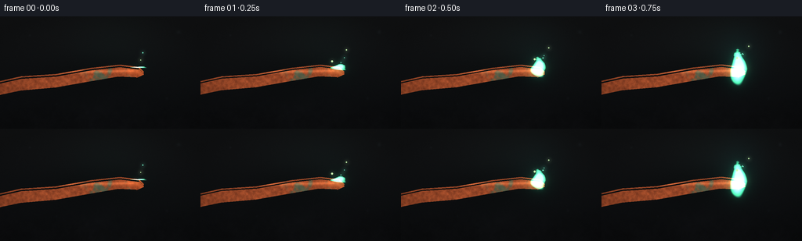
展开代码变化
--- 上一保存版本
+++ 本次保存版本
@@ -165,7 +165,7 @@
def render_flame(base, frame):
- """Render a rising, aurora-green flame using warped signed distance fields."""
+ """Render a rising aurora-green plume with a bright, narrow core."""
h, w = base.shape[:2]
s = SS
yy, xx = np.mgrid[0:h, 0:w].astype(np.float32)
@@ -175,59 +175,56 @@
ignite = smoothstep(0.0, 1.3, t)
breathe = 1 + 0.045 * np.sin(t * 8.3 + 0.3) + 0.025 * np.sin(t * 14.1)
- # Main plume centerline curves upward and slightly to the right.
- height = (42 + 1.8 * np.sin(t * 5.2)) * ignite * breathe
- width = (13.8 + 0.7 * np.sin(t * 6.8 + 1.2)) * (0.82 + 0.18 * ignite)
+ # A tapered centerline makes the flame lean naturally in its own updraft.
+ height = (55 + 2.2 * np.sin(t * 5.2)) * ignite * breathe
root_x = 175.5
root_y = 65.0
- yn = (root_y - y) / np.maximum(height, 1)
- sway = 5.2 * np.sin(yn * 2.2 + t * 3.8) * yn + 2.8 * yn * yn
- cn = np.clip((x - root_x - sway) / np.maximum(width, 1), -2, 2)
- yn_clip = np.clip(yn, -0.1, 1.2)
- taper = 0.86 - 0.52 * yn_clip
- plume = 1 - np.sqrt((cn / np.maximum(taper, 0.08)) ** 2 + (yn / 1.0) ** 2)
-
- # Licking tongues create a non-bulbous, candle-like silhouette.
- tongues = np.zeros_like(plume)
- for phase, amp, freq, off in [
- (0.0, 0.26, 4.5, 0.0),
- (1.8, 0.19, 7.0, 0.8),
- (3.3, 0.12, 10.0, -0.4),
- ]:
- tongue_x = 1.8 * np.sin(yn * freq + t * 4.1 + phase) + off * yn
- tongue_w = 0.28 + 0.42 * (1 - yn_clip)
- tongues = np.maximum(
- tongues,
- np.exp(-((cn - tongue_x) / tongue_w) ** 2) * smoothstep(0.2, 0.85, yn),
- )
- plume += 0.16 * tongues * (1 - smoothstep(0.75, 1.05, yn))
-
- # Turbulent edge breakup keeps the silhouette alive but coherent.
- turb = fbm_field((h, w), 9 * s, 4, 31 + frame % 3)
- warp = (turb - 0.5) * 0.32
- plume += warp * smoothstep(0.05, 0.8, yn)
-
- core = np.clip(plume / 0.48, 0, 1)
- body = smoothstep(0.0, 0.18, plume)
- glow = np.exp(-((x - root_x) / 31) ** 2 - ((y - 47) / 37) ** 2) * ignite
-
- # Emission ramp: white-hot cyan core, emerald middle, blue-green edge.
+ yn = np.clip((root_y - y) / np.maximum(height, 1), -0.15, 1.25)
+ sway = 1.4 * yn + 3.8 * yn ** 2 + 2.1 * np.sin(yn * 3.2 + t * 3.3) * yn
+ center = root_x + sway
+ half_width = (9.8 - 7.2 * np.clip(yn, 0, 1) ** 1.35) * (0.9 + 0.1 * ignite)
+ half_width = np.maximum(half_width, 1.0)
+ dx = x - center
+
+ # Rounded root plus a pointed, slightly asymmetric tip.
+ tip_round = smoothstep(0.74, 1.03, yn)
+ rounded_width = np.sqrt(np.maximum(half_width ** 2 - (yn * 6.3) ** 2, 0.0))
+ shape_width = half_width * (1 - 0.58 * tip_round) + 0.9
+ radial = np.abs(dx) / shape_width
+ vertical = smoothstep(-0.10, 0.04, yn) * (1 - smoothstep(0.82, 1.03, yn))
+ body = (1 - smoothstep(0.68, 1.02, radial)) * vertical
+ body += np.exp(-((dx / np.maximum(rounded_width, 1.2)) ** 2 + ((yn + 0.015) / 0.16) ** 2))
+ body = np.clip(body, 0, 1)
+
+ # Fine flame tongues on the upper half break up the otherwise smooth taper.
+ turb = fbm_field((h, w), 11 * s, 4, 31 + frame % 3)
+ ripple = 1.6 * np.sin(yn * 21 - t * 9.2) + 1.1 * np.sin(yn * 35 + t * 5.7)
+ body *= 1 - 0.25 * smoothstep(0.38, 0.9, yn) * (turb - 0.35)
+ body *= 1 - 0.24 * smoothstep(0.36, 0.76, np.abs(dx + ripple))
+ body = gaussian_filter(body, sigma=(0.38 * s, 0.52 * s))
+
+ # Keep the white-cyan center narrow and let green dominate the outer body.
+ core = np.clip(body, 0, 1) ** 2.1
+ core *= np.exp(-(dx / 3.3) ** 2) * (1 - smoothstep(0.55, 0.88, yn))
+ edge = smoothstep(0.02, 0.20, body)
+ glow = np.exp(-((x - root_x) / 22) ** 2 - ((y - 51) / 33) ** 2) * ignite
+
out = base.copy()
- edge_col = np.array([17, 83, 85], dtype=np.float32)
- body_col = np.array([24, 202, 132], dtype=np.float32)
- core_col = np.array([166, 255, 207], dtype=np.float32)
- col = edge_col * (1 - body[..., None]) + body_col * body[..., None]
+ edge_col = np.array([11, 72, 78], dtype=np.float32)
+ body_col = np.array([24, 194, 132], dtype=np.float32)
+ core_col = np.array([188, 255, 218], dtype=np.float32)
+ col = edge_col * (1 - edge[..., None]) + body_col * edge[..., None]
col = col * (1 - core[..., None]) + core_col * core[..., None]
- intensity = (0.17 * glow + 0.73 * body + 0.42 * core)[..., None]
- out = out * (1 - 0.18 * body[..., None]) + col * intensity
-
- # Additive bloom at three scales, tinted green with a faint warm root.
- em = (body * (0.75 + 0.65 * core))[..., None] * body_col
- bloom1 = gaussian_filter(em, sigma=(4.0 * s, 4.0 * s, 0))
- bloom2 = gaussian_filter(em, sigma=(11.0 * s, 11.0 * s, 0))
- out += 0.25 * bloom1 + 0.16 * bloom2
- root_glow = np.exp(-((x - root_x) / 10) ** 2 - ((y - 66) / 5.5) ** 2) * ignite
- out += root_glow[..., None] * np.array([48, 31, 9], dtype=np.float32)
+ intensity = (0.10 * glow + 0.60 * edge + 0.48 * core)[..., None]
+ out = out * (1 - 0.11 * edge[..., None]) + col * intensity
+
+ # Tighter bloom retains the visible flame edge instead of washing it out.
+ em = (edge * (0.55 + 0.58 * core))[..., None] * body_col
+ bloom1 = gaussian_filter(em, sigma=(2.3 * s, 2.3 * s, 0))
+ bloom2 = gaussian_filter(em, sigma=(6.8 * s, 6.8 * s, 0))
+ out += 0.13 * bloom1 + 0.055 * bloom2
+ root_glow = np.exp(-((x - root_x) / 8.0) ** 2 - ((y - 65) / 4.4) ** 2) * ignite
+ out += root_glow[..., None] * np.array([50, 33, 10], dtype=np.float32)
return out
候选 03播放与检查图
候选 04播放与检查图
点击播放 · 原生 RGB 像素

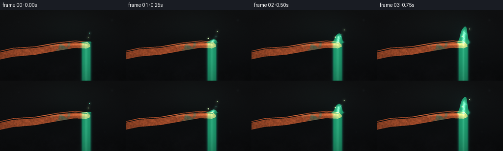
展开代码变化
--- 上一保存版本
+++ 本次保存版本
@@ -175,54 +175,70 @@
ignite = smoothstep(0.0, 1.3, t)
breathe = 1 + 0.045 * np.sin(t * 8.3 + 0.3) + 0.025 * np.sin(t * 14.1)
- # A tapered centerline makes the flame lean naturally in its own updraft.
- height = (55 + 2.2 * np.sin(t * 5.2)) * ignite * breathe
+ # A tapered, slightly sheared centerline makes the flame lean naturally.
+ height = (49 + 2.4 * np.sin(t * 5.2)) * ignite * breathe
root_x = 175.5
root_y = 65.0
- yn = np.clip((root_y - y) / np.maximum(height, 1), -0.15, 1.25)
- sway = 1.4 * yn + 3.8 * yn ** 2 + 2.1 * np.sin(yn * 3.2 + t * 3.3) * yn
+ yn = np.clip((root_y - y) / np.maximum(height, 1), -0.18, 1.28)
+ sway = (
+ 1.5 * yn
+ + 4.8 * np.clip(yn, 0, 1) ** 2.1
+ + 1.8 * np.sin(yn * 3.0 + t * 3.1) * np.clip(yn, 0, 1)
+ )
center = root_x + sway
- half_width = (9.8 - 7.2 * np.clip(yn, 0, 1) ** 1.35) * (0.9 + 0.1 * ignite)
- half_width = np.maximum(half_width, 1.0)
dx = x - center
-
- # Rounded root plus a pointed, slightly asymmetric tip.
- tip_round = smoothstep(0.74, 1.03, yn)
- rounded_width = np.sqrt(np.maximum(half_width ** 2 - (yn * 6.3) ** 2, 0.0))
- shape_width = half_width * (1 - 0.58 * tip_round) + 0.9
- radial = np.abs(dx) / shape_width
- vertical = smoothstep(-0.10, 0.04, yn) * (1 - smoothstep(0.82, 1.03, yn))
- body = (1 - smoothstep(0.68, 1.02, radial)) * vertical
- body += np.exp(-((dx / np.maximum(rounded_width, 1.2)) ** 2 + ((yn + 0.015) / 0.16) ** 2))
+ p = np.clip(yn, 0, 1)
+
+ # A teardrop envelope, widest just above the root and narrowing to a tip.
+ half_width = 13.4 * (1 - p) ** 0.72 * (0.62 + 0.38 * smoothstep(0, 0.24, p))
+ half_width += 2.8 * np.exp(-((p - 0.08) / 0.16) ** 2)
+ half_width = np.maximum(half_width, 0.55)
+
+ # Coherent, high-frequency corrugation gives the silhouette flame-like lobes.
+ corrugation = (
+ 1.05 * np.sin(p * 27.0 + t * 7.2 + np.sin(p * 7.0))
+ + 0.55 * np.sin(p * 51.0 - t * 10.5)
+ ) * smoothstep(0.10, 0.85, p)
+ lateral = np.abs(dx + 0.55 * np.sin(p * 17.0 + t * 5.0))
+ body = 1 - smoothstep(0.62, 1.08, lateral / (half_width + corrugation))
+ body *= smoothstep(-0.10, 0.035, yn) * (1 - smoothstep(0.92, 1.10, p))
+
+ # Separate tongues flare from the sides and give the plume a live outline.
+ for p0, side, amp, phase in [
+ (0.28, -1.0, 2.8, 0.2),
+ (0.46, 1.0, 3.6, 1.7),
+ (0.64, -1.0, 2.4, 3.0),
+ (0.76, 1.0, 1.6, 4.1),
+ ]:
+ tongue_center = side * (half_width + amp * (0.55 + 0.45 * np.sin(t * 4.5 + phase)))
+ tongue = np.exp(-((p - p0) / 0.075) ** 2 - ((dx - tongue_center) / 1.8) ** 2)
+ body = np.maximum(body, 0.78 * tongue)
+
+ # Soften the interior, but retain a few translucent striations.
+ body = gaussian_filter(body, sigma=(0.34 * s, 0.40 * s))
+ body *= 0.91 + 0.09 * np.sin(p * 40 - t * 5 + dx * 0.3)
body = np.clip(body, 0, 1)
- # Fine flame tongues on the upper half break up the otherwise smooth taper.
- turb = fbm_field((h, w), 11 * s, 4, 31 + frame % 3)
- ripple = 1.6 * np.sin(yn * 21 - t * 9.2) + 1.1 * np.sin(yn * 35 + t * 5.7)
- body *= 1 - 0.25 * smoothstep(0.38, 0.9, yn) * (turb - 0.35)
- body *= 1 - 0.24 * smoothstep(0.36, 0.76, np.abs(dx + ripple))
- body = gaussian_filter(body, sigma=(0.38 * s, 0.52 * s))
-
- # Keep the white-cyan center narrow and let green dominate the outer body.
- core = np.clip(body, 0, 1) ** 2.1
- core *= np.exp(-(dx / 3.3) ** 2) * (1 - smoothstep(0.55, 0.88, yn))
- edge = smoothstep(0.02, 0.20, body)
- glow = np.exp(-((x - root_x) / 22) ** 2 - ((y - 51) / 33) ** 2) * ignite
+ # Hot cyan center sits inside a broad emerald body.
+ core = np.clip(body, 0, 1) ** 1.7
+ core *= np.exp(-(dx / 3.9) ** 2) * (1 - smoothstep(0.48, 0.87, p))
+ edge = smoothstep(0.025, 0.19, body)
+ glow = np.exp(-((x - root_x) / 24) ** 2 - ((y - 49) / 36) ** 2) * ignite
out = base.copy()
- edge_col = np.array([11, 72, 78], dtype=np.float32)
- body_col = np.array([24, 194, 132], dtype=np.float32)
- core_col = np.array([188, 255, 218], dtype=np.float32)
+ edge_col = np.array([8, 78, 83], dtype=np.float32)
+ body_col = np.array([18, 186, 123], dtype=np.float32)
+ core_col = np.array([143, 255, 212], dtype=np.float32)
col = edge_col * (1 - edge[..., None]) + body_col * edge[..., None]
col = col * (1 - core[..., None]) + core_col * core[..., None]
- intensity = (0.10 * glow + 0.60 * edge + 0.48 * core)[..., None]
- out = out * (1 - 0.11 * edge[..., None]) + col * intensity
+ intensity = (0.12 * glow + 0.72 * edge + 0.35 * core)[..., None]
+ out = out * (1 - 0.14 * edge[..., None]) + col * intensity
# Tighter bloom retains the visible flame edge instead of washing it out.
em = (edge * (0.55 + 0.58 * core))[..., None] * body_col
- bloom1 = gaussian_filter(em, sigma=(2.3 * s, 2.3 * s, 0))
- bloom2 = gaussian_filter(em, sigma=(6.8 * s, 6.8 * s, 0))
- out += 0.13 * bloom1 + 0.055 * bloom2
+ bloom1 = gaussian_filter(em, sigma=(2.6 * s, 2.6 * s, 0))
+ bloom2 = gaussian_filter(em, sigma=(7.5 * s, 7.5 * s, 0))
+ out += 0.16 * bloom1 + 0.060 * bloom2
root_glow = np.exp(-((x - root_x) / 8.0) ** 2 - ((y - 65) / 4.4) ** 2) * ignite
out += root_glow[..., None] * np.array([50, 33, 10], dtype=np.float32)
候选 05播放与检查图
候选 06播放与检查图
点击播放 · 原生 RGB 像素

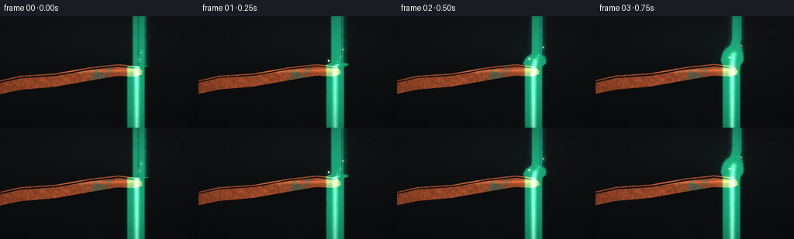
展开代码变化
--- 上一保存版本
+++ 本次保存版本
@@ -189,50 +189,54 @@
dx = x - center
p = np.clip(yn, 0, 1)
- # A teardrop envelope, widest just above the root and narrowing to a tip.
- half_width = 13.4 * (1 - p) ** 0.72 * (0.62 + 0.38 * smoothstep(0, 0.24, p))
- half_width += 2.8 * np.exp(-((p - 0.08) / 0.16) ** 2)
- half_width = np.maximum(half_width, 0.55)
-
- # Coherent, high-frequency corrugation gives the silhouette flame-like lobes.
- corrugation = (
- 1.05 * np.sin(p * 27.0 + t * 7.2 + np.sin(p * 7.0))
- + 0.55 * np.sin(p * 51.0 - t * 10.5)
- ) * smoothstep(0.10, 0.85, p)
- lateral = np.abs(dx + 0.55 * np.sin(p * 17.0 + t * 5.0))
- body = 1 - smoothstep(0.62, 1.08, lateral / (half_width + corrugation))
- body *= smoothstep(-0.10, 0.035, yn) * (1 - smoothstep(0.92, 1.10, p))
-
- # Separate tongues flare from the sides and give the plume a live outline.
- for p0, side, amp, phase in [
- (0.28, -1.0, 2.8, 0.2),
- (0.46, 1.0, 3.6, 1.7),
- (0.64, -1.0, 2.4, 3.0),
- (0.76, 1.0, 1.6, 4.1),
- ]:
- tongue_center = side * (half_width + amp * (0.55 + 0.45 * np.sin(t * 4.5 + phase)))
- tongue = np.exp(-((p - p0) / 0.075) ** 2 - ((dx - tongue_center) / 1.8) ** 2)
- body = np.maximum(body, 0.78 * tongue)
-
- # Soften the interior, but retain a few translucent striations.
- body = gaussian_filter(body, sigma=(0.34 * s, 0.40 * s))
- body *= 0.91 + 0.09 * np.sin(p * 40 - t * 5 + dx * 0.3)
- body = np.clip(body, 0, 1)
-
- # Hot cyan center sits inside a broad emerald body.
- core = np.clip(body, 0, 1) ** 1.7
- core *= np.exp(-(dx / 3.9) ** 2) * (1 - smoothstep(0.48, 0.87, p))
- edge = smoothstep(0.025, 0.19, body)
+ # The envelope is built from a wide inner body and several rising lobes.
+ body = np.zeros_like(x)
+ lobe_specs = [
+ (0.0, 0.00, 13.2, 0.73, 0.0),
+ (-2.0, 0.20, 8.0, 0.62, 1.8),
+ (2.7, 0.34, 6.2, 0.55, 3.4),
+ (-4.0, 0.50, 5.1, 0.47, 5.0),
+ (1.1, 0.63, 3.7, 0.38, 2.6),
+ ]
+ for xoff, yoff, lobe_w, lobe_h, phase in lobe_specs:
+ wx = 1.9 * np.sin(t * 3.6 + phase) + 1.1 * np.sin(t * 6.1 + phase * 2)
+ px = xoff + wx * (0.35 + yoff)
+ py = yoff + 0.035 * np.sin(t * 5.0 + phase)
+ width_here = lobe_w * (0.74 + 0.26 * smoothstep(0, 0.3, p))
+ qx = (dx - px) / width_here
+ qy = (p - py) / lobe_h
+ lobe = np.exp(-(qx ** 4 * 1.2 + qy ** 2 * 1.1))
+ lobe *= 1 - 0.22 * smoothstep(0.55, 1.0, p)
+ body = np.maximum(body, lobe)
+
+ # A pointed cap and soft root merge the lobes into one continuous flame.
+ tip_center = 4.4 * p + 1.3 * np.sin(t * 3.7)
+ tip = np.exp(-((dx - tip_center) / (2.7 * (1 - p) + 0.7)) ** 2)
+ tip *= smoothstep(0.46, 0.65, p) * (1 - smoothstep(0.90, 1.07, p))
+ body = np.maximum(body, 0.72 * tip)
+ root = np.exp(-((dx - 0.5) / 7.3) ** 2 - ((p + 0.01) / 0.12) ** 2)
+ body = np.maximum(body, root)
+
+ # Coherent ripples add fine tongues without breaking the body apart.
+ turb = fbm_field((h, w), 8 * s, 4, 53)
+ body *= 0.88 + 0.16 * turb
+ body *= 0.93 + 0.07 * np.sin(p * 36 - t * 8 + dx * 0.32)
+ body = gaussian_filter(np.clip(body, 0, 1), sigma=(0.32 * s, 0.38 * s))
+
+ # Hot cyan core is separated from a yellow-green inner root.
+ core = np.clip(body, 0, 1) ** 1.6
+ core *= np.exp(-((dx - 0.8) / 3.3) ** 2) * (1 - smoothstep(0.40, 0.82, p))
+ edge = smoothstep(0.025, 0.18, body)
glow = np.exp(-((x - root_x) / 24) ** 2 - ((y - 49) / 36) ** 2) * ignite
out = base.copy()
- edge_col = np.array([8, 78, 83], dtype=np.float32)
- body_col = np.array([18, 186, 123], dtype=np.float32)
- core_col = np.array([143, 255, 212], dtype=np.float32)
+ edge_col = np.array([7, 77, 80], dtype=np.float32)
+ body_col = np.array([16, 175, 119], dtype=np.float32)
+ core_col = np.array([141, 255, 211], dtype=np.float32)
col = edge_col * (1 - edge[..., None]) + body_col * edge[..., None]
col = col * (1 - core[..., None]) + core_col * core[..., None]
- intensity = (0.12 * glow + 0.72 * edge + 0.35 * core)[..., None]
- out = out * (1 - 0.14 * edge[..., None]) + col * intensity
+ intensity = (0.12 * glow + 0.73 * edge + 0.32 * core)[..., None]
+ out = out * (1 - 0.15 * edge[..., None]) + col * intensity
# Tighter bloom retains the visible flame edge instead of washing it out.
em = (edge * (0.55 + 0.58 * core))[..., None] * body_col
候选 07播放与检查图
点击播放 · 原生 RGB 像素
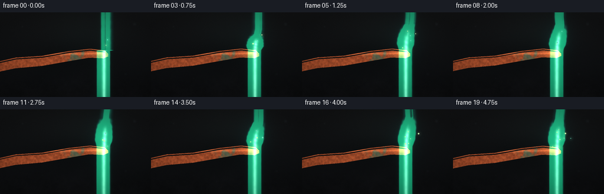
展开代码变化
--- 上一保存版本
+++ 本次保存版本
@@ -206,7 +206,7 @@
qx = (dx - px) / width_here
qy = (p - py) / lobe_h
lobe = np.exp(-(qx ** 4 * 1.2 + qy ** 2 * 1.1))
- lobe *= 1 - 0.22 * smoothstep(0.55, 1.0, p)
+ lobe *= 0.90 - 0.16 * smoothstep(0.55, 1.0, p)
body = np.maximum(body, lobe)
# A pointed cap and soft root merge the lobes into one continuous flame.
@@ -222,6 +222,8 @@
body *= 0.88 + 0.16 * turb
body *= 0.93 + 0.07 * np.sin(p * 36 - t * 8 + dx * 0.32)
body = gaussian_filter(np.clip(body, 0, 1), sigma=(0.32 * s, 0.38 * s))
+ # Fade the lowest few pixels so the hot copper tip remains visible.
+ body *= smoothstep(0.015, 0.115, p)
# Hot cyan core is separated from a yellow-green inner root.
core = np.clip(body, 0, 1) ** 1.6
@@ -233,6 +235,11 @@
edge_col = np.array([7, 77, 80], dtype=np.float32)
body_col = np.array([16, 175, 119], dtype=np.float32)
core_col = np.array([141, 255, 211], dtype=np.float32)
+ if frame <= 4:
+ # Brief ignition flare: a warm seed flash underneath the green flame.
+ flash = (1 - smoothstep(0.0, 4.0, frame)) * smoothstep(0, 1.0, frame + 0.2)
+ ignition = np.exp(-((x - 176) / 12) ** 2 - ((y - 64) / 7.5) ** 2) * flash
+ out += ignition[..., None] * np.array([96, 50, 15], dtype=np.float32)
col = edge_col * (1 - edge[..., None]) + body_col * edge[..., None]
col = col * (1 - core[..., None]) + core_col * core[..., None]
intensity = (0.12 * glow + 0.73 * edge + 0.32 * core)[..., None]
候选 08播放与检查图
点击播放 · 原生 RGB 像素

展开代码变化
代码未变化；重新保存了产物。
可观测工具轨迹
实际执行的命令与返回图片。
命令 1exit 0
/bin/bash -c "pwd && rg --files -g 'prompt.txt' -g 'GENERATION_RULES.md' -g 'task_spec.json' -g '"'!**/.git/**'"'"
命令 2exit 0
/bin/bash -c "ls -la && find . -maxdepth 2 -type f -printf '%p %s bytes\\n' | sort | head -200"
命令 3exit 0
/bin/bash -c 'cat prompt.txt'
命令 4exit 0
/bin/bash -c 'cat GENERATION_RULES.md'
命令 5exit 0
/bin/bash -c 'cat task_spec.json'
命令 6exit 0
/bin/bash -c "sed -n '1,240p' artifact_io.py"
命令 7exit 0
/bin/bash -c "python - <<'PY'
import numpy, PIL
print('numpy', numpy.__version__)
print('PIL', PIL.__version__)
PY"命令 8exit 0
/bin/bash -c "python - <<'PY'
try:
import scipy; print('scipy', scipy.__version__)
except Exception as e: print('no scipy', e)
PY"命令 9exit 0
/bin/bash -c 'time python generate.py'
命令 10exit 0
/bin/bash -c 'mkdir -p .tmp/candidate_01 && cp generate.py inspection.png transition_check.png pixels.npz index.html .tmp/candidate_01/ && cp -r frames .tmp/candidate_01/'
命令 11exit 0
/bin/bash -c 'time python generate.py'
命令 12exit 0
/bin/bash -c 'mkdir -p .tmp/candidate_02 && cp generate.py inspection.png transition_check.png pixels.npz index.html .tmp/candidate_02/ && cp -r frames .tmp/candidate_02/'
命令 13exit 0
/bin/bash -c 'time python generate.py'
命令 14exit 0
/bin/bash -c 'mkdir -p .tmp/candidate_03 && cp generate.py inspection.png transition_check.png pixels.npz index.html .tmp/candidate_03/ && cp -r frames .tmp/candidate_03/'
命令 15exit 0
/bin/bash -c 'time python generate.py'
命令 16exit 0
/bin/bash -c 'mkdir -p .tmp/candidate_04 && cp generate.py inspection.png transition_check.png pixels.npz index.html .tmp/candidate_04/ && cp -r frames .tmp/candidate_04/'
命令 17exit 0
/bin/bash -c "sed -n '205,295p' generate.py"
命令 18exit 0
/bin/bash -c 'python -m py_compile generate.py && time python generate.py'
命令 19exit 0
/bin/bash -c 'ls -lh generate.py prompt.txt task_spec.json GENERATION_RULES.md artifact_io.py index.html pixels.npz inspection.png transition_check.png audio.wav 2>/dev/null; find frames -maxdepth 1 -type f | sort | wc -l'
命令 20exit 0
/bin/bash -c "python - <<'PY'
from pathlib import Path
import json, numpy as np
from PIL import Image
spec=json.loads(Path('task_spec.json').read_text())
z=np.load('pixels.npz')
print('spec', spec)
print('npz keys', z.files, 'shape', z['pixels'].shape, 'dtype', z['pixels'].dtype)
files=sorted(Path('frames').glob('*.png'))
print('frames', len(files), 'first', files[0].name, 'last', files[-1].name)
for p in (files[0], files[-1]):
im=Image.open(p)
print(p.name, im.mode, im.size)
a=np.asarray(im)
print(' min/max/mean', a.min(), a.max(), round(float(a.mean()),2), 'unique', len(np.unique(a.reshape(-1,3),axis=0)))
PY"命令 21exit 0
/bin/bash -c "python - <<'PY'
from pathlib import Path
import numpy as np
from PIL import Image
files=sorted(Path('frames').glob('*.png'))
arr=np.stack([np.asarray(Image.open(p),dtype=np.float32) for p in files])
d=np.abs(np.diff(arr,axis=0)).mean(axis=(1,2,3))
print('adjacent mean abs diff:', ' '.join(f'{x:.3f}' for x in d))
print('mean', round(float(arr.mean()),3), 'min', int(arr.min()), 'max', int(arr.max()))
print('all frames nonblank:', bool(np.all(arr.max(axis=(1,2,3)) > 100)))
PY"视觉工具实际返回图片 1
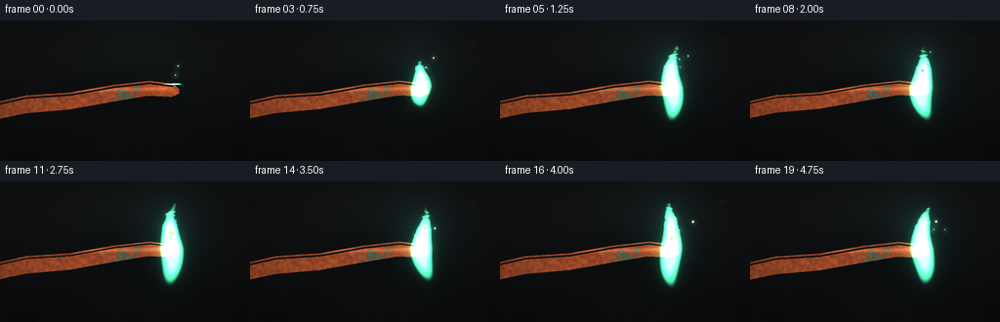
视觉工具实际返回图片 2
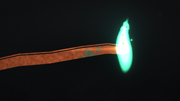
视觉工具实际返回图片 3
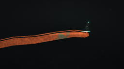
视觉工具实际返回图片 4
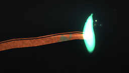
视觉工具实际返回图片 5

视觉工具实际返回图片 6
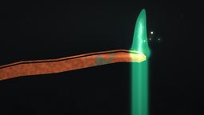
视觉工具实际返回图片 7

视觉工具实际返回图片 8

视觉工具实际返回图片 9
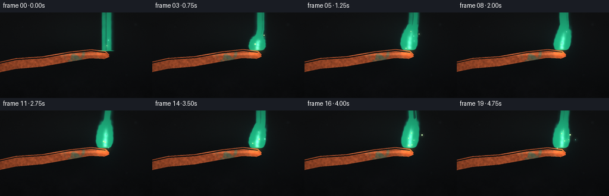
视觉工具实际返回图片 10
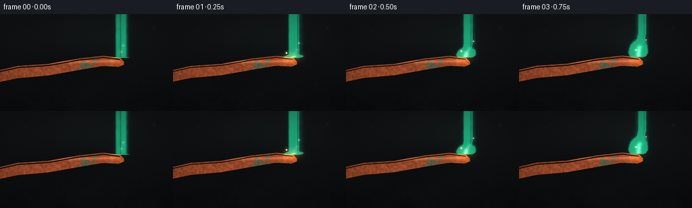
保存候选 8 份；完成命令 21 次；可验证图片返回 10 张。原始 API 响应与完整日志保留在本地。